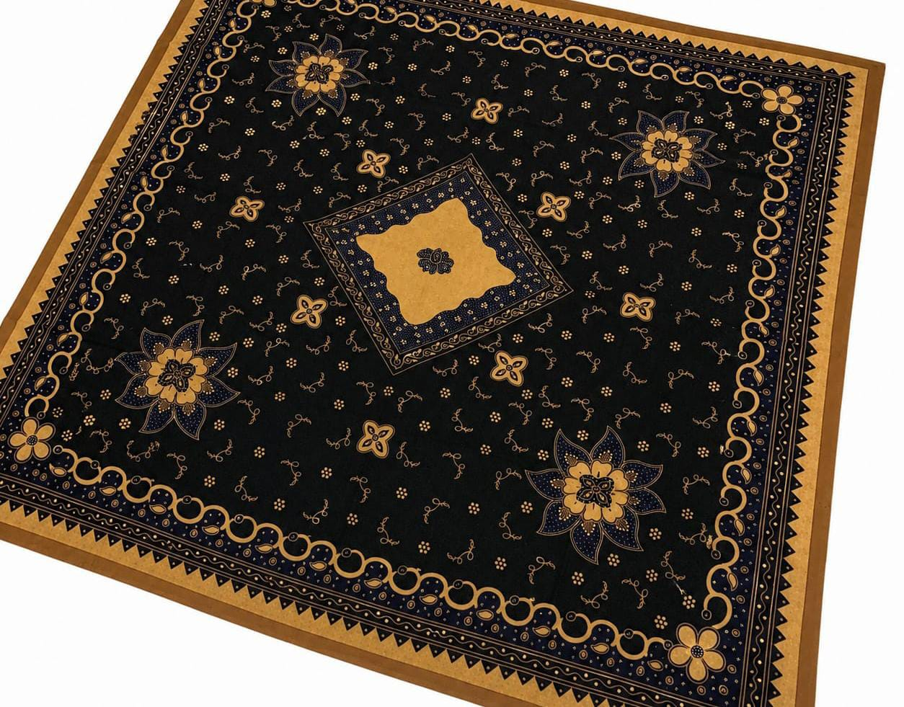
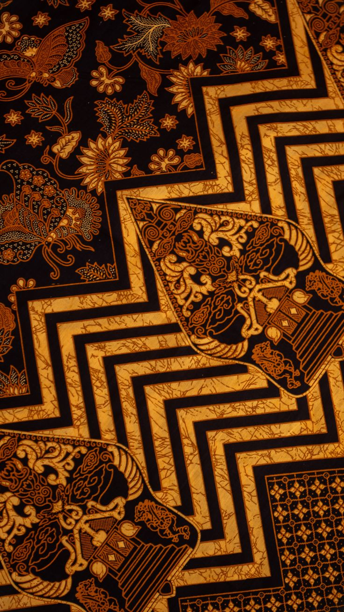

Batik Adinata
Warisan Budaya dalam Setiap Motif
Keindahan batik Indonesia, kini lebih dekat dengan koleksi pilihan dari Batik Adinata.
Jelajahi Koleksi →Kualitas PremiumPilihan bahan terbaik
Motif EksklusifTerinspirasi budaya
Cocok untuk AcaraFormal dan kasual
Pelayanan TerbaikSiap membantu Anda
Pilihan Adinata
Koleksi Terbaru
Temukan pilihan batik untuk melengkapi setiap momen.

